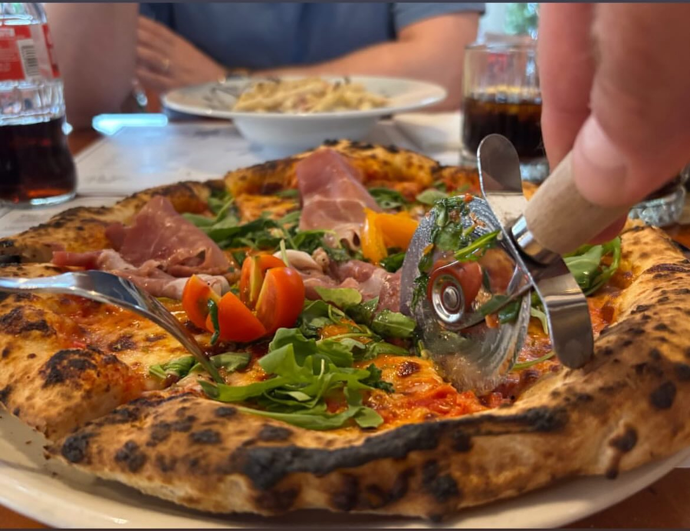
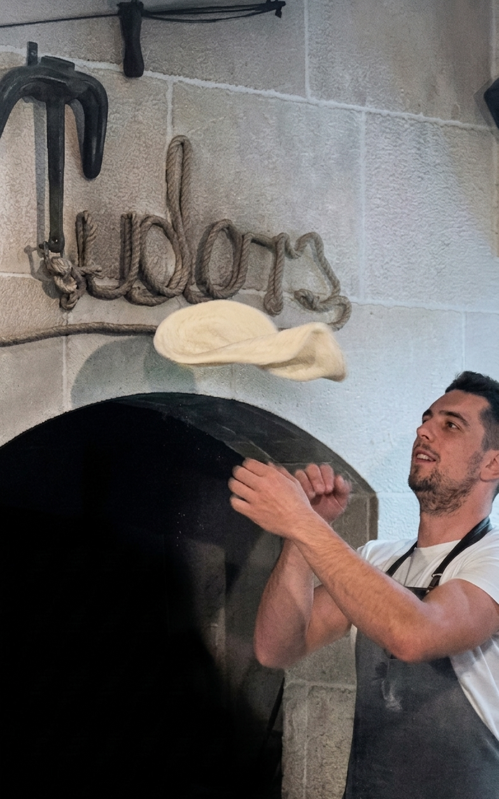
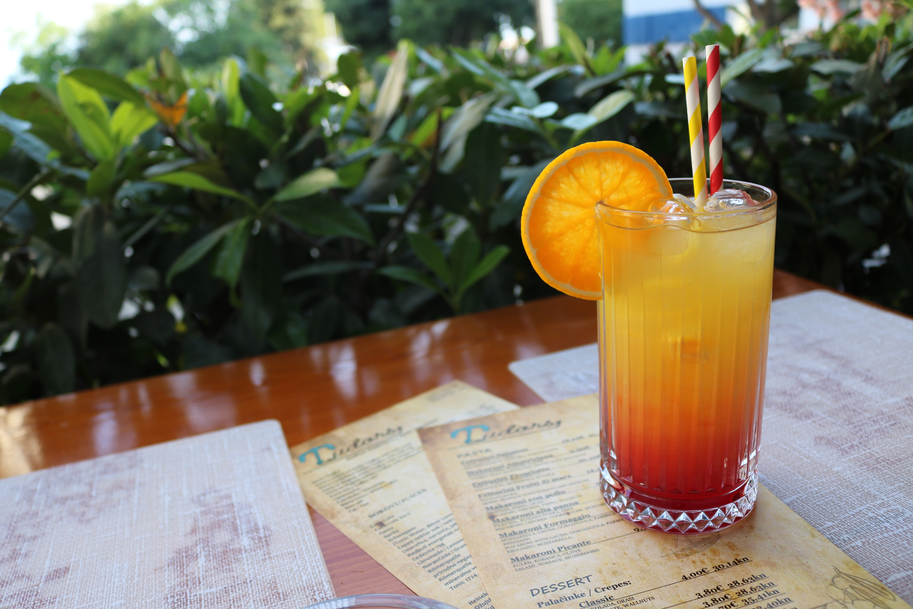
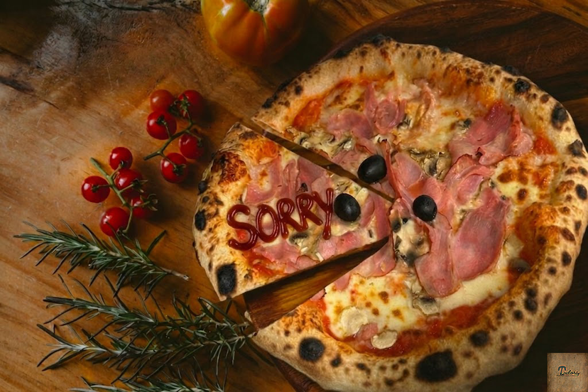

Our Ambience




Hand-crafted dough, fresh ingredients, and a warm Split atmosphere that makes every stop at Tudors feel like the right one.

Pizza & Pasta Tudors, located in the vibrant Firule area of Split, brings you an authentic Italian dining experience with a Croatian signature. Our restaurant in Split takes pride in preparing both premium pizza and delicious pasta according to traditional recipes, using only the freshest ingredients and high-quality flour.
Our skilled pizzaiolos carefully hand-stretch the dough and bake every pizza at high temperatures of 420°C for a perfect golden crunch, while our pasta chefs prepare rich, flavorful dishes daily using classic Italian techniques. Whether you're craving a classic Italian pizza or a rich, creamy fettuccine, Tudors is your choice for the best Italian food in Split.
House specialties include Tudor's Special Pizza with aromatic truffles and Dalmatian prosciutto, and our famous creamy pasta with Mediterranean herbs and premium toppings. Visit us and discover why we're the favorite pizzeria and pasta restaurant in Split among food lovers!

At Pizza & Pasta Tudors, we believe that exceptional food deserves exceptional drinks. Our carefully curated selection features premium Croatian wines from renowned Dalmatian vineyards, including robust reds like Plavac Mali and crisp whites like Pošip and Grk that perfectly complement our Italian specialties.
Our bartenders serve a curated selection of cocktails and premium drinks, perfectly crafted to complement your meal. From a refreshing Aperol Spritz to a wide range of top-shelf spirits, every drink is prepared with care and served with a Mediterranean flair.
For those who appreciate traditional spirits, we offer an excellent selection of Croatian rakija (brandy) – from aromatic loza (grape brandy) to medicinal travarica (herb rakija) and sweet pelinkovac. Whether you prefer it as an aperitif or digestif, our rakija selection showcases the best of Croatian distilling tradition.
Let our staff guide you to the perfect pairing – whether it's a glass of wine with your pizza, a refreshing cocktail on our terrace, or a shot of rakija to complete your dining experience.


Due to high demand during the peak season, we currently do not accept new reservations. However, all previously made bookings will be honored.
Most guests stay around 45 minutes, and we have plenty of tables available to welcome walk-in visitors. Because of this, you usually won’t have to wait long to be seated.
Come early and enjoy the full dine-in experience at Pizza Pasta Tudors in Split, where great food and warm hospitality meet!
Find us at Spinciceva 7, 21000 Split, close to Firule and Bacvice. Tudors serves pizza, pasta, cocktails, Croatian wines, and rakija for guests looking for Italian food with a Dalmatian touch.
Use the menu link before you arrive, check reviews, or open Google Maps for the fastest route to Tudors from your current location.
"The best pizza in Split. The crust is perfectly crispy and the ingredients are fresh. Tudor's Special is an absolute hit."
"Excellent service, delicious pizza, and a great atmosphere. We will definitely be back. Highly recommended."
"Finally, a place in Split that really nails the full pizza experience. Fast, flavorful, and always worth the trip."
Address:
Spinciceva 7
21000 Split, Croatia
Opening Hours:
Every day 17:00-00:00.
Tap the way you want to travel and Google Maps will open directions to Tudors from your current location.